Tomisato, Chiba: things to do, food and stays
Tomisato · Chiba
Tomisato
Highlighted on the Chiba map.
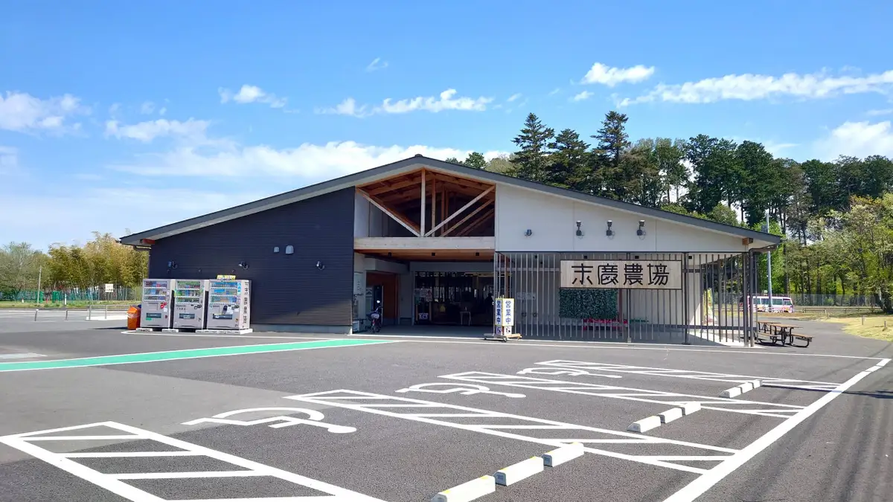
Stay
インターナショナルリゾートホテル湯楽城
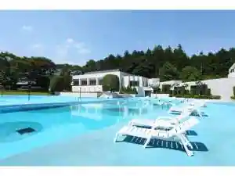
Intanashonaru Resort Hotel Yu Raku Shiro
Dining
麺屋 青山
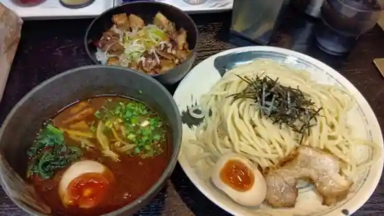
Men Ya Aoyama
しょうね家
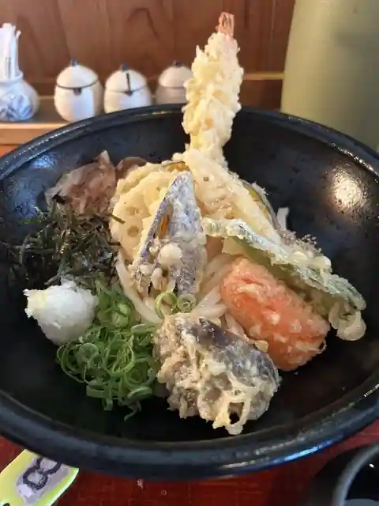
Shone Ie
手打おぴっぴ
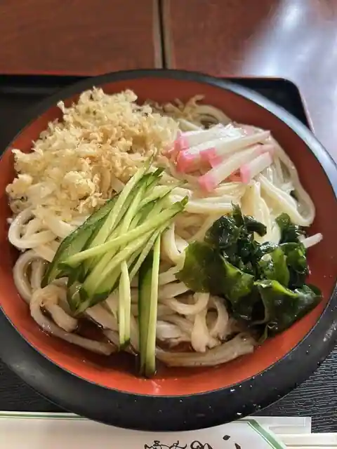
Teuchi Opippi
中華料理広東亭
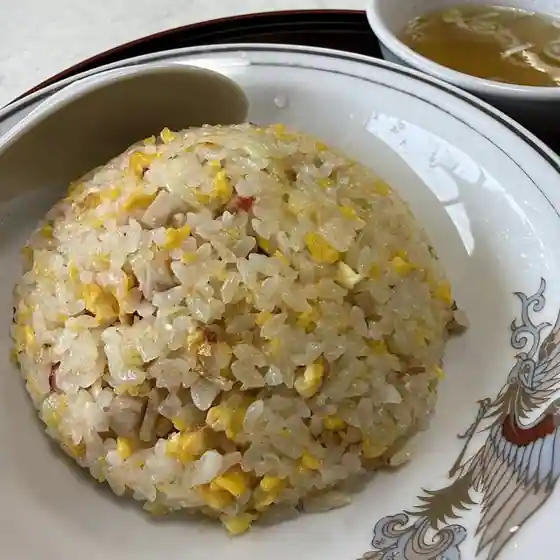
Chukaryori Kanton Tei
ラ－メンショップネモト
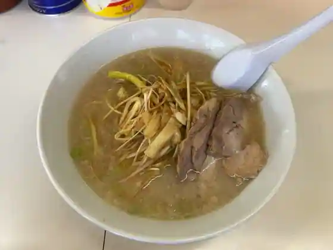
Ra - Menshoppunemoto
麺屋チクワ
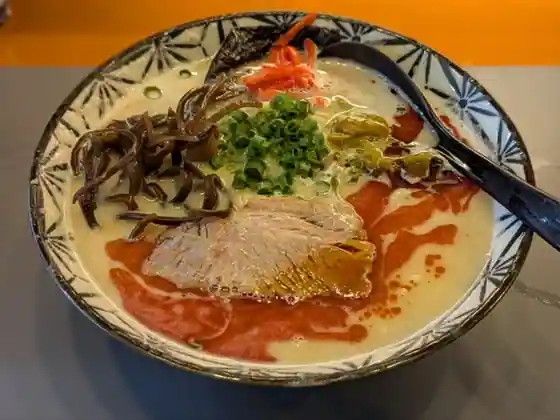
Men Ya Chikuwa
味喜食堂
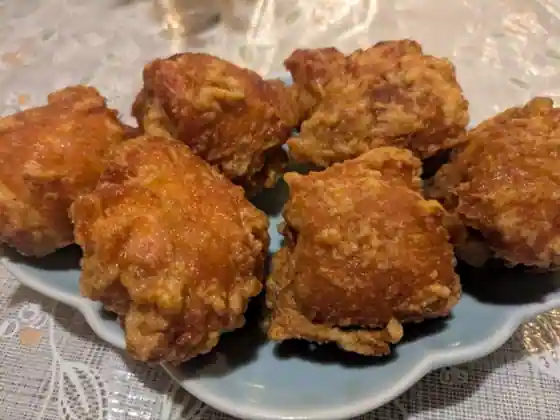
Aji Ki Shokudo
はらだ 富里店
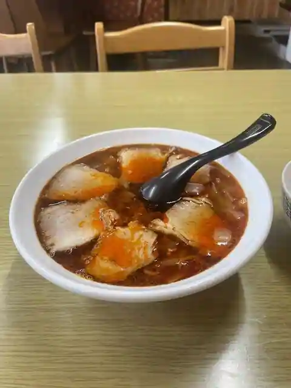
Harada Tomisato
エムズスタイル
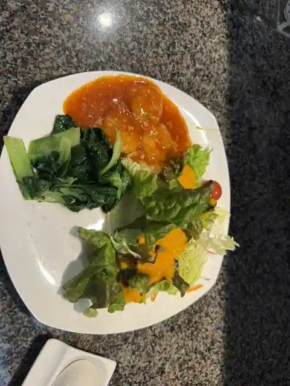
Emuzusutairu
タイシティ 富里本店
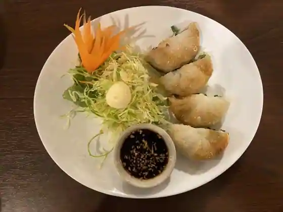
Tai City Tomisato Hon
ステーキ 黒べこ。
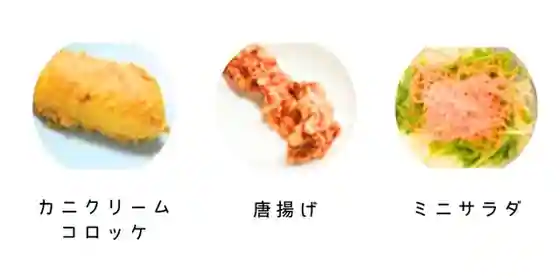
Steak Kuro Beko.
ボウボウラーメン とみ
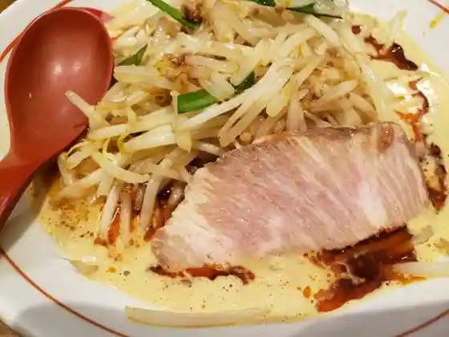
Boubou Ramen Tomi
丸福コパン
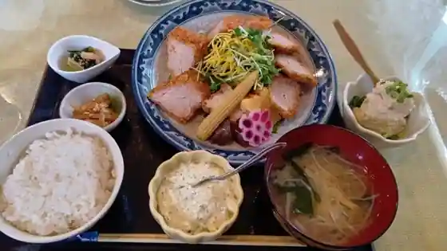
Marufuku Ko Bakery
北海道ラーメン ロッキー秀
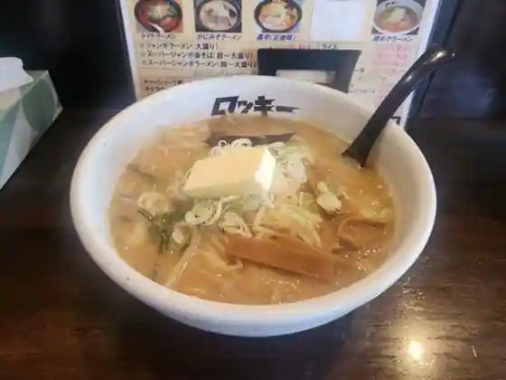
Hokkaido Ramen Rokki Shu
康世
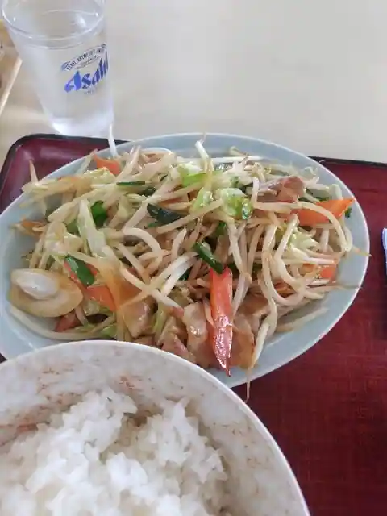
Yasuyo
そば処 如月
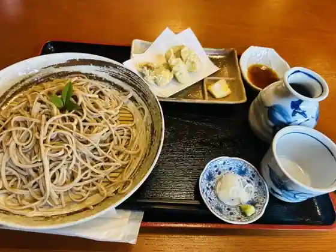
Soba Tokoro Kisaragi
久能カントリー倶楽部
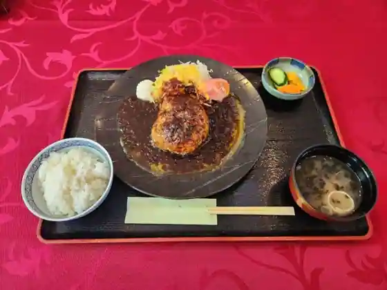
Kuno Kantori Kurabu
そば処きみ良
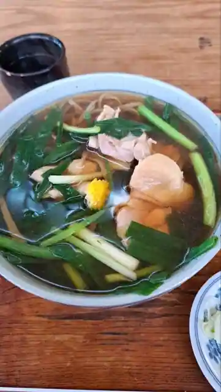
Soba Tokoro Kimi Ryo
スープパスタ専門店 セモリナ
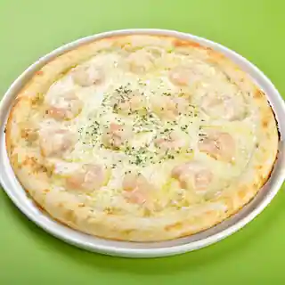
Supu Pasta Senmon Semorina
T's BBQ
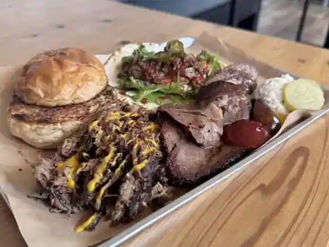
T's BBQ
CHAKATI
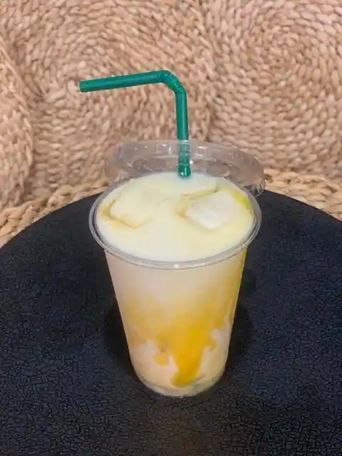
CHAKATI
食事処 さいとう
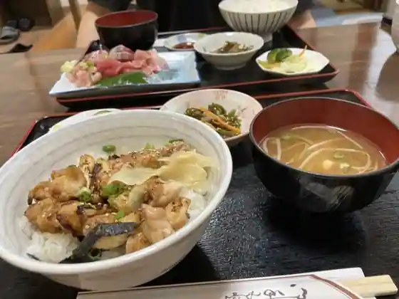
Shokuji Tokoro Saito
長寿庵
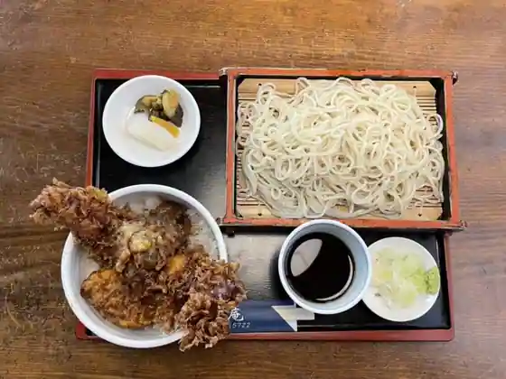
Choju Iori
クッチーナ・トキオネーゼ・コジマ
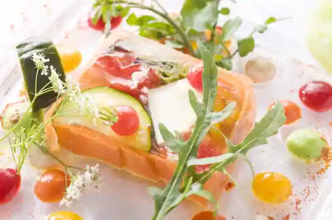
Kutchina Tokioneze Kojima
Sights
Kanko Koryu Kyoten Shisetsu (Suehiro Nojo)
JA Tomisato Sanchoku Center Sanchoku Center 1 Gokan (Jun Sai Kan)
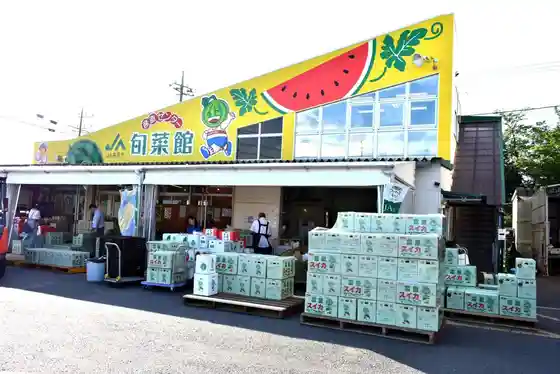
JA Tomisato Sanchoku Center 2 Go Mise (Hiyoshi Kan)
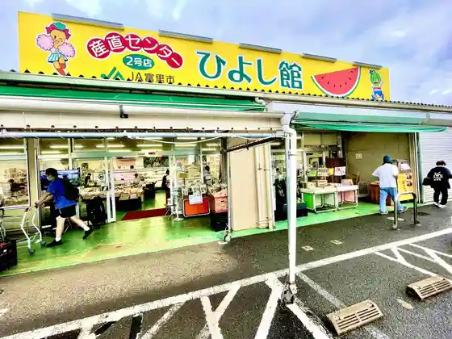
Beriizu Farm Atsuta
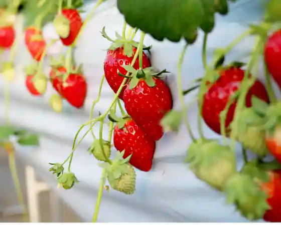
Mitani Tane Matsurigoto Kuyo to
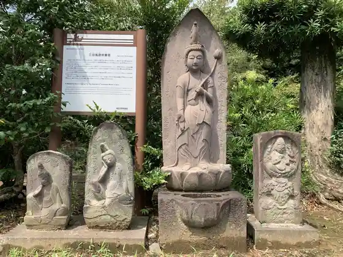